13 Описательная статистика, распределения
library(tidyverse)Мы обсуждали разные типы переменных:
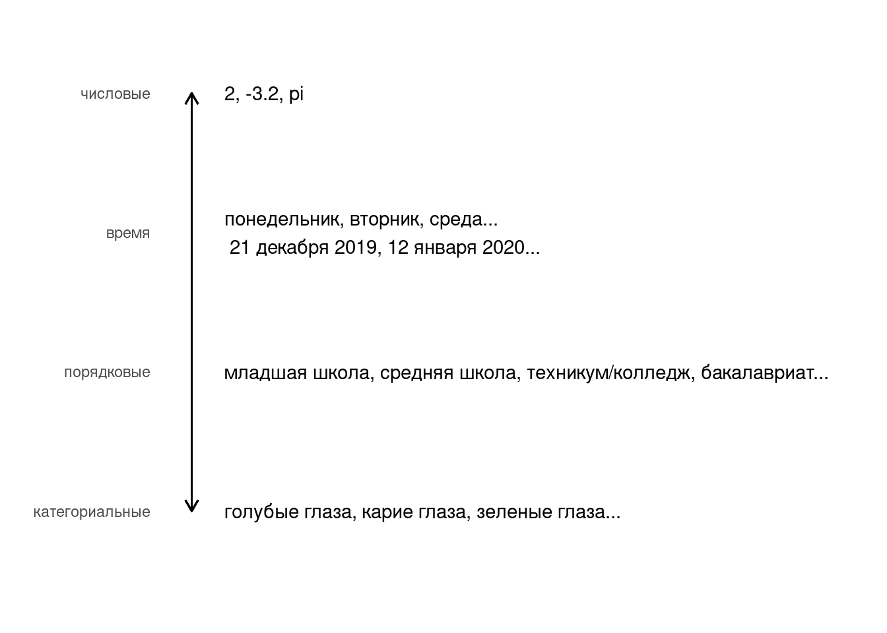
В данном занятии мы сосредоточимся на категориальных и числовых переменных.
13.1 Описательная статистика
Описательная статистика — это общий термин, в который включают понятия позволяющие оценить тренд в данных.
13.1.1 Категориальные переменные
Для категориальных переменных описательных статистик не так много:
- количество
- частоты
- энтропия
Возьмем для примера датасет starwars. Мы легко можем посчитать количество существо разных расс:
starwars %>%
count(species, sort = TRUE)Мы также легко можем посчитать долю существо разных расс:
starwars %>%
count(species, sort = TRUE) %>%
mutate(ratio = n/sum(n))Долю легко перевести в проценты:
starwars %>%
count(species, sort = TRUE) %>%
mutate(ratio = n/sum(n)*100)Мы также легко можем посчитать энтропию. В том виде, как ее сформулировал Клод Шеннон, формула выглядит так:
\[H = -\sum_{i=1}^n p_i\times\log_2(p_i),\ где\]
- \(H\) — энтропия
- \(p_i\) — доля \(i\)-того независимого исхода из всех независимых исходов
starwars %>%
count(species, sort = TRUE) %>%
mutate(ratio = n/sum(n)) %>%
summarise(entropy = -sum(ratio*log2(ratio)))Что показывает эта мера? Рассмотрим следующий тиббл:
tibble(x = c("a", "a", "a", "a", "a", "a", "a", "a", "a", "a", "a", "b", "a", "b", "b", "c", "a", "a"),
group = rep(c("first", "second", "third"), each = 6),
id = rep(1:6, 3)) %>%
pivot_wider(names_from = group, values_from = x)Давайте посчитаем энтропию для каждой группы:
tibble(x = c("a", "a", "a", "a", "a", "a", "a", "a", "a", "a", "a", "b", "a", "b", "b", "c", "a", "a"),
group = rep(c("first", "second", "third"), each = 6)) %>%
count(group, x, sort = TRUE) %>%
group_by(group) %>%
mutate(ratio = n/sum(n)) %>%
summarise(entropy = -sum(ratio*log2(ratio)))Как видно, чем более разнообразна группа, тем выше энтропия. Посмотрим еще на такой тибл:
tibble(x = c("a", "a", "b", "a", "с", "a", "a", "b", "b", "c", "a", "a", "a", "b", "b", "c", "с", "a"),
group = rep(c("first", "second", "third"), each = 6),
id = rep(1:6, 3)) %>%
pivot_wider(names_from = group, values_from = x)tibble(x = c("a", "a", "b", "a", "с", "a", "a", "b", "b", "c", "a", "a", "a", "b", "b", "c", "с", "a"),
group = rep(c("first", "second", "third"), each = 6)) %>%
count(group, x, sort = TRUE) %>%
group_by(group) %>%
mutate(ratio = n/sum(n)) %>%
summarise(entropy = -sum(ratio*log2(ratio)))Как видно, чем “однороднее” группы, тем выше энтропия.
Влияет ли порядок следования элементов в векторе на значение энтропии?
Посчитайте значение энтропии для переменных clarity, color и cut из датасета diamonds. У какой переменной значение энтропии наибольшее?
13.1.2 Числовые переменные
Для числовых значений описательные статистики в целом предсказуемые:
diamonds %>%
summarise(mean = mean(price),
median = median(price),
quantile_0.5 = quantile(price, 0.5), # квантиль
quantile_0.25 = quantile(price, 0.25),
quantile_0.1 = quantile(price, 0.1),
min = min(price),
max = max(price),
var = var(price), # дисперсия
sd = sd(price)) # cреднеквадратическое отклонениеСмещенная оценка дисперсии выборки \(X = {x_1, x_2, ..., x_n}\):
\[\sigma^2 = \frac{1}{n}\sum_{i = 1}^n(x_i - \mu)^2,\ где\]
- \(x_i\) — i-тый элемент выборки X
- \(\mu\) — среднее
Несмещенная оценка дисперсии выборки \(X = {x_1, x_2, ..., x_n}\):
\[\sigma^2 = \frac{1}{n-1}\sum_{i = 1}^n(x_i - \mu)^2\]
Вот ссылка на видео, в котором объясняется, почему первая оценка смещенная.
13.2 От частотности к вероятности
13.2.1 Категориальная переменная
Возьмем какой-нибудь простой случай двух взаимоисключающих исходов.
Какая доля имен героев из датасета starwars начинается на букву B? Ответ округлите до 3 знаков после запятой.
Мы получили такой результат на основании 9 успехов из 87 наблюдений. Но, что если они там еще чего-то наснимают? Какова вероятность, что в новом фильме будет герой на “B,” если предположить, что создатели стараются держать равновесие? 0.103? Но если там будет 13 новых героев, то полученная нами доля не будет иметь смысла, ведь 13*0.103 = 1.339. Для ответа на такие вопросы обычно используют биномиальное распределение.
\[P(k | n, p) = \frac{n!}{k!(n-k)!} \times p^k \times (1-p)^{n-k} = {n \choose k} \times p^k \times (1-p)^{n-k}\]
\[ 0 \leq p \leq 1; n, k > 0,\ где\]
- n — общее число наблюдений
- k — число успехов
- p — предполагаемая исследователем вероятность успеха
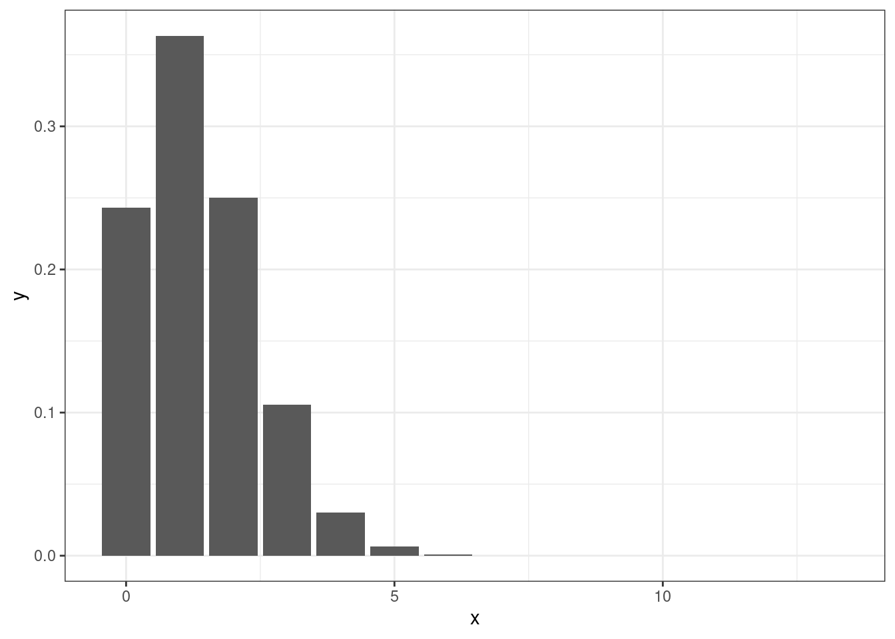
Таким образом, если мы считаем вероятность 0.103 верной для данного процесса, то тогда вероятность не увидеть новых героев на букву “B” вероятнее, чем увидеть 3 или 5:
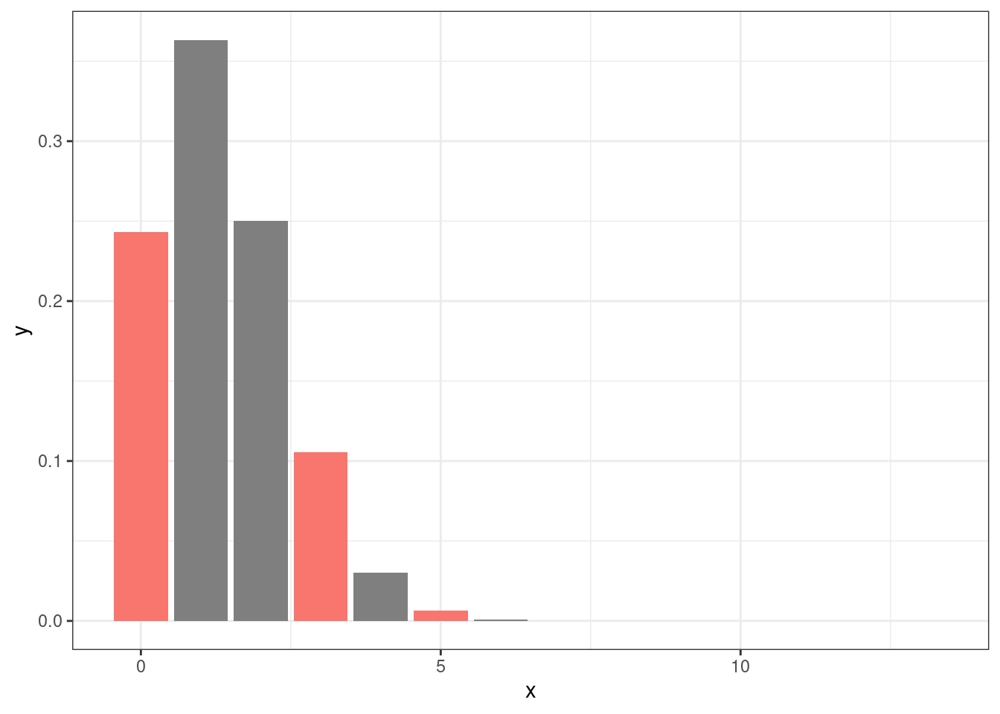
Теперь мы сделали шаг в сторону вероятностной модели: все что нужно знать, что случаи двух взаимоисключающих исходов следует моделировать при помощи биномиального распределения.
13.2.2 Числовая переменная
С числовой переменной все устроено похожим образом: дотплот, гистограмма, функция плотности.
starwars %>%
ggplot(aes(height))+
geom_dotplot(method="histodot")`stat_bindot()` using `bins = 30`. Pick better value with `binwidth`.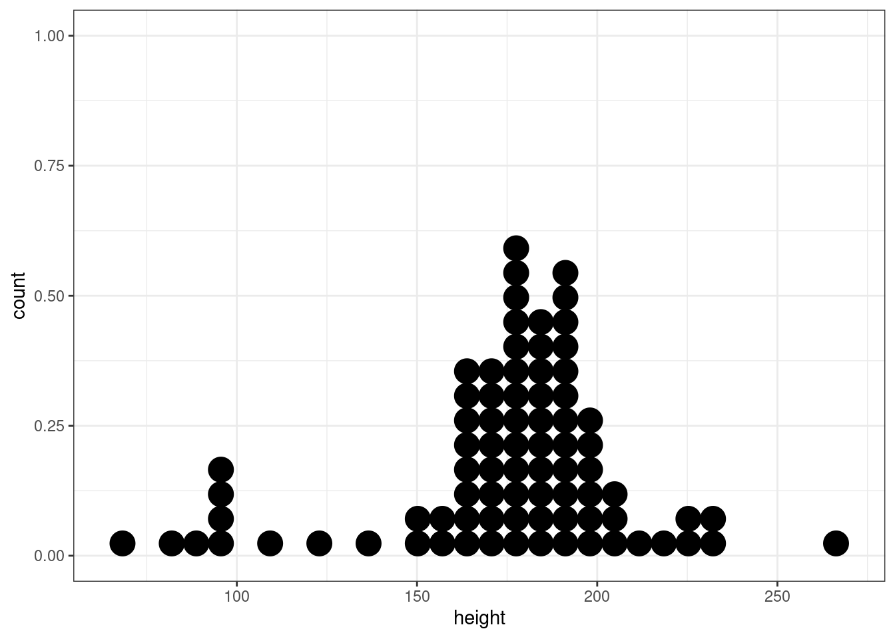
starwars %>%
ggplot(aes(height))+
geom_histogram(alpha = 0.5)+
geom_dotplot(method="histodot")`stat_bin()` using `bins = 30`. Pick better value with `binwidth`.
`stat_bindot()` using `bins = 30`. Pick better value with `binwidth`.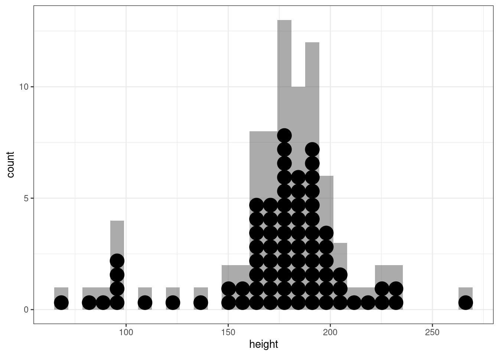
starwars %>%
ggplot(aes(height))+
geom_histogram(alpha = 0.5, binwidth = 20)+
geom_dotplot(method="histodot")`stat_bindot()` using `bins = 30`. Pick better value with `binwidth`.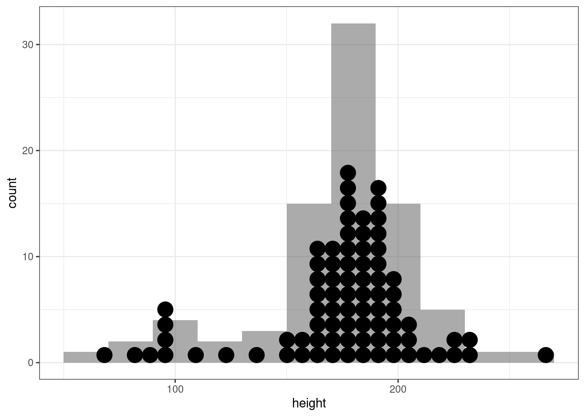
starwars %>%
ggplot(aes(height))+
geom_histogram(alpha = 0.5, binwidth = 30)+
geom_dotplot(method="histodot")`stat_bindot()` using `bins = 30`. Pick better value with `binwidth`.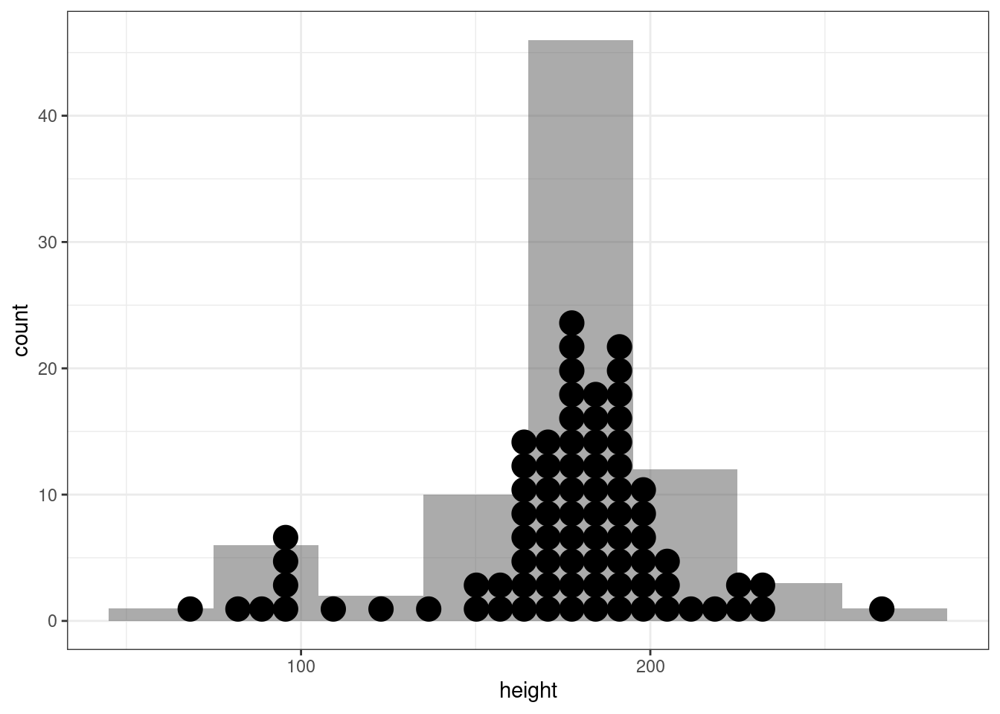
starwars %>%
ggplot(aes(height, y =..density..))+
geom_histogram(alpha = 0.5, binwidth = 30)+
geom_density()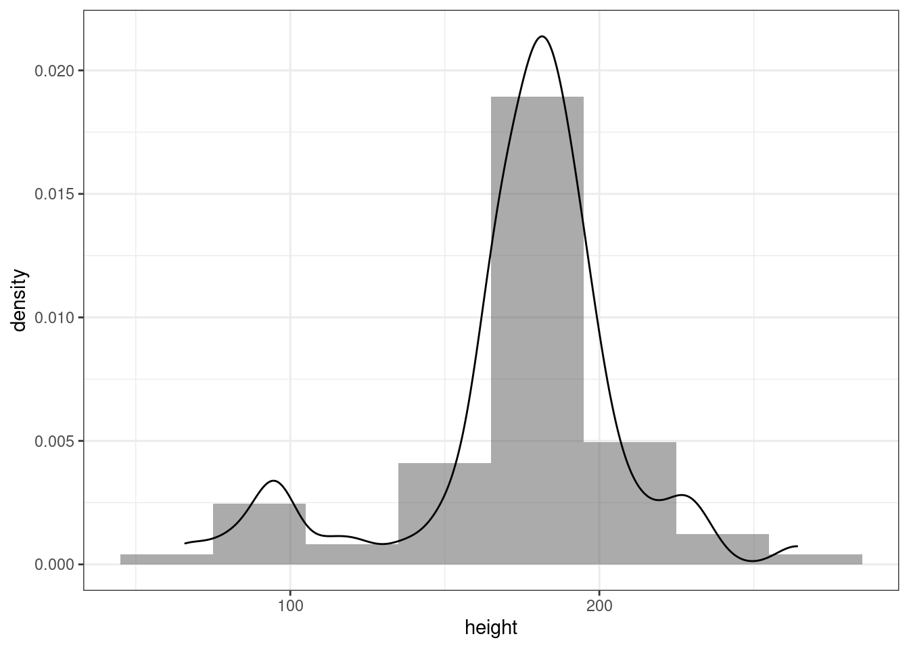
Мы можем предположить, что генеральная совокупность можно описать нормальным распределением.
\[P(x) = \frac{1}{\sigma\sqrt{2\pi}}\times e^{-\frac{\left(x-\mu\right)^2}{2\sigma^2}}\]
\[\mu \in \mathbb{R}; \sigma^2 > 0,\ где\]
- \(\mu\) — среднее
- \(\sigma^2\) — среднеквадратическое отклонение
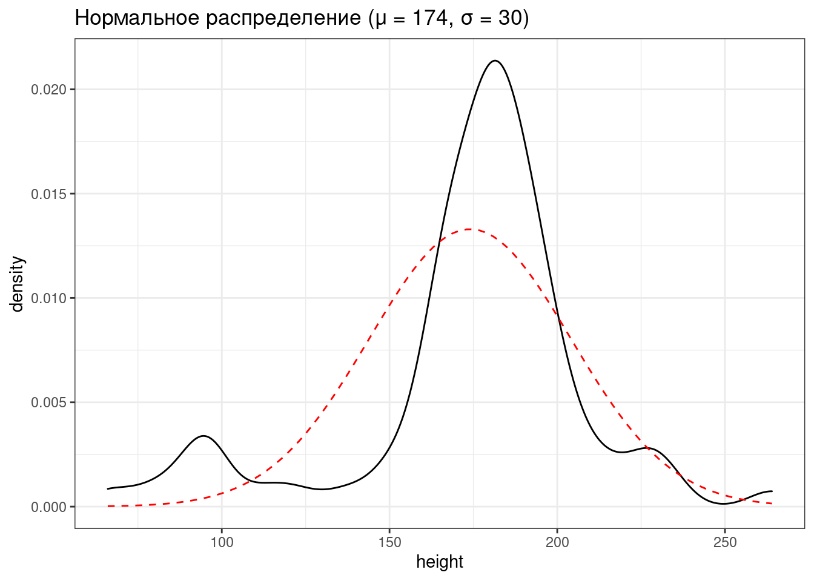
13.2.3 Распределения
В R встроено какое-то количество известных распределений. Все они представлены четырьмя функциями:
d...(функция плотности, probability density function),p...(функция распределения, cumulative distribution function) — [интеграл площади под кривой или сумма всех значений] от начала до указанной квантилиq...(обратная функции распределения, inverse cumulative distribution function) — значение p-той квантили распределения- и
r...(рандомные числа из заданного распределения).
Рассмотрим все это на примере нормального распределения.
tibble(x = 1:100,
PDF = dnorm(x = x, mean = 50, sd = 10)) %>%
ggplot(aes(x, PDF))+
geom_point()+
labs(title = "PDF нормального распределения (μ = 50, σ = 10)")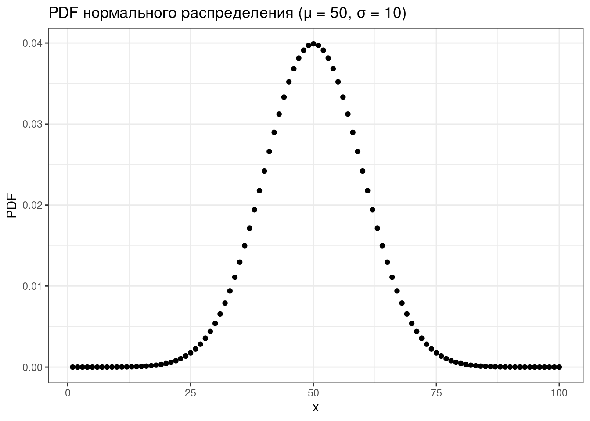
tibble(x = 1:100,
CDF = pnorm(x, mean = 50, sd = 10)) %>%
ggplot(aes(x, CDF))+
geom_point()+
labs(title = "CDF нормального распределения (μ = 50, σ = 10)")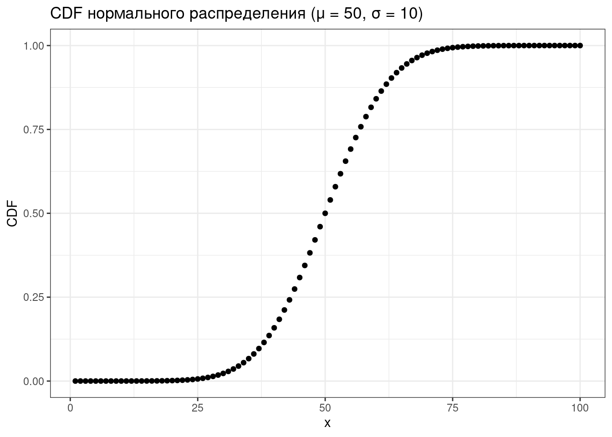
tibble(quantiles = seq(0, 1, by = 0.01),
value = qnorm(quantiles, mean = 50, sd = 10)) %>%
ggplot(aes(quantiles, value))+
geom_point()+
labs(title = "inverse CDF нормального распределения (μ = 50, σ = 10)")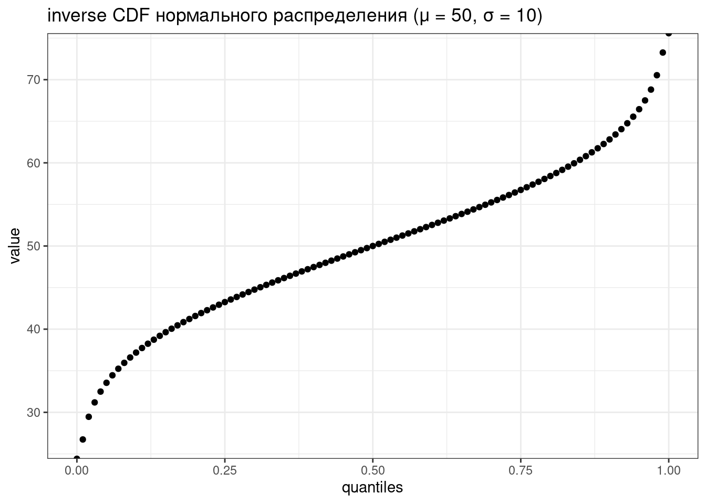
tibble(sample = rnorm(100, mean = 50, sd = 10)) %>%
ggplot(aes(sample))+
geom_histogram()+
labs(title = "выборка нормально распределенных чисел (μ = 50, σ = 10)")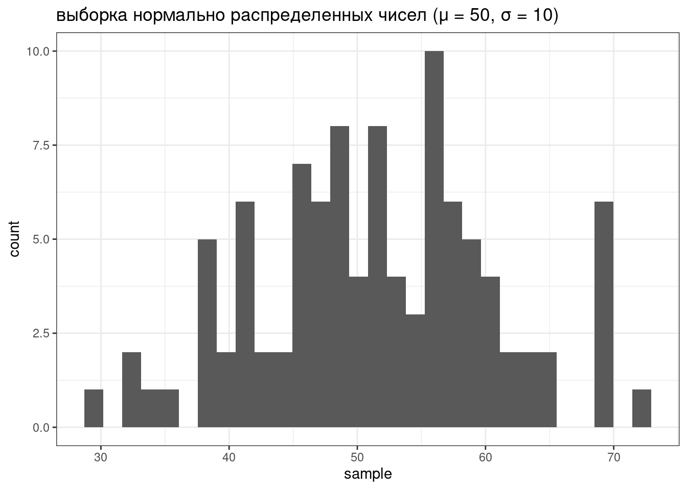
Если не использовать set.seed(), то результат работы рандомизатора нельзя будет повторить.
Аналогично можно использовать функции dbinom(), pbinom(), qbinom() и rbinom() для биномиального распределения, а также ..t() для распределения Стьюдента, ...chisq() для распределения хи-квадрат и т. п.
Биномиальное и нормальное распределения не единственные распределения, которые придумали люди:
- вот ресурс, на котором сделана попытка собрать все распределения и визуализировать связи между ними;
- вот приложение, позволяющие исследовать разные распределения.
Рассмотрим задачу, которую обсуждали выше с именами героев из датасета strawars. Посчитайте значение функции плотности в точке 3 для биномиального распределения с вероятностью успеха 0.103. (округление до 3 знаков после запятой).
13.2.4 Давайте посчитаем вероятности
Какова вероятность, что мы в новом фильме будет 3 и более новых героев на “B?”
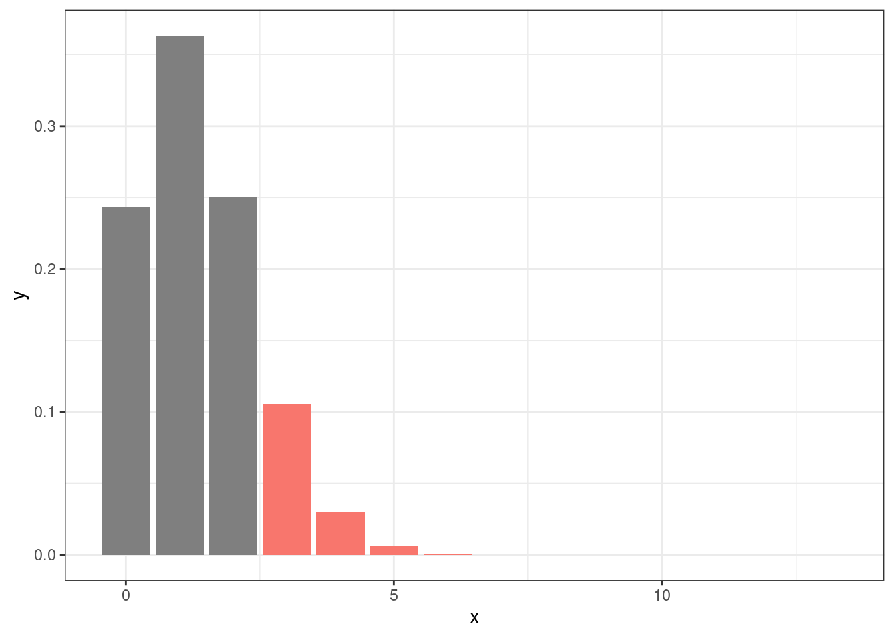
Это можно вычислить при помощи функции dbinom(), pbinom():
sum(dbinom(3:13, size = 13, prob = 0.103))[1] 0.14297561-pbinom(2, size = 13, prob = 0.103)[1] 0.1429756Если предположить, что рост героев Звездных войн постоянен и описывается нормальным распределением со средним 174 и стандартным откланением 30, какова вероятность что в новом фильме встретиться герой ростом между 200 и 230?
`stat_bin()` using `bins = 30`. Pick better value with `binwidth`.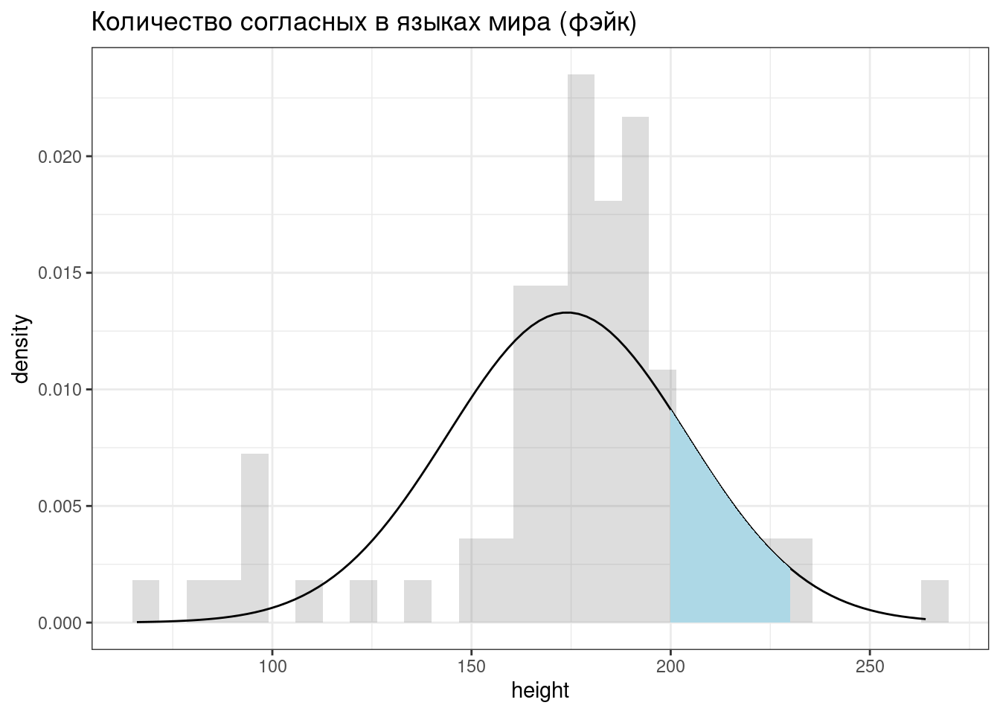
integrate(function(x){dnorm(x, mean = 174, sd = 30)}, lower = 200, upper = 230)0.1620883 with absolute error < 1.8e-15pnorm(230, mean = 174, sd = 30) - pnorm(200, mean = 174, sd = 30)[1] 0.1620883